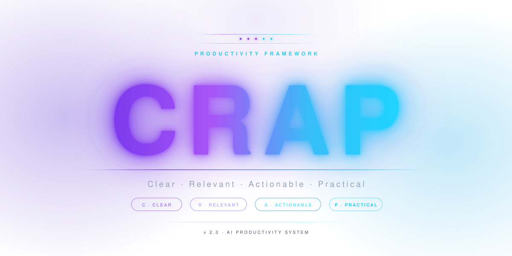

Short video walkthroughs of key concepts — ordered from introductory to advanced.
What prompt engineering is, why it matters, and how better prompts lead to dramatically better results.
How Bloom's hierarchy of cognitive skills maps to the way we should instruct and evaluate AI responses.
Using the CATS framework — Context, Aim, Task, Style — to write prompts that get consistent, on-target results.
The CARP prompt structure — Context, Aim, Requirements, Persona — and how to apply it to real tasks.
Common mistakes when choosing between Claude's model tiers — and why the wrong model hurts your results.
How to match Claude Haiku, Sonnet, and Opus to the right tasks for speed, quality, and cost.
How to use Projects to give Claude persistent context, instructions, and memory across every conversation.
Creating interactive apps, charts, diagrams, and documents as live Artifacts inside Claude's side panel.
What Skills are, how to create them, and how they turn repeated tasks into reusable, consistent behaviors.
A worked example of building a Claude Skill — using the Rubik's Cube as a fun, memorable teaching scenario.
How Plugins bundle Skills, connectors, and knowledge into a single installable workflow for your team.
How Claude remembers things across conversations — and how to use memory features deliberately and effectively.
Using Claude Dispatch to orchestrate multi-step workflows and coordinate tasks across agents and tools.

The CARP prompt structure — Context, Aim, Requirements, Persona — at a glance. Reference this when building prompts for any task.
Visual comparison of Claude's three model tiers — speed, capability, and cost — to help you pick the right model for the job.